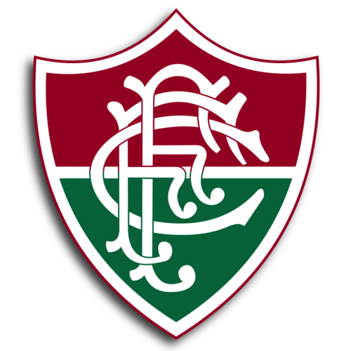

Maior artilheiro do século
| nome do Artilheiro | Quando jogou | Gols feitos |
|---|---|---|
| Fred | 2009 a 2016/2020 a 2022 | 199 gols |

Fluminense Football Club, é uma agremiação poliesportiva e cultural sediada no bairro de Laranjeiras, Zona Sul da cidade do Rio de Janeiro, no Brasil, fundada em 21 de julho de 1902.
1 intercontinental, 6 nacionais 4 Interestaduais e 49 estaduais. O Fluminense é o único clube de futebol no mundo a ter conquistado a Taça Olímpica e a única instituição brasileira a ter seu nome inscrito nela. Por ter sido o clube carioca com maior número de títulos estaduais no século passado.
| nome do Artilheiro | Quando jogou | Gols feitos |
|---|---|---|
| Fred | 2009 a 2016/2020 a 2022 | 199 gols |